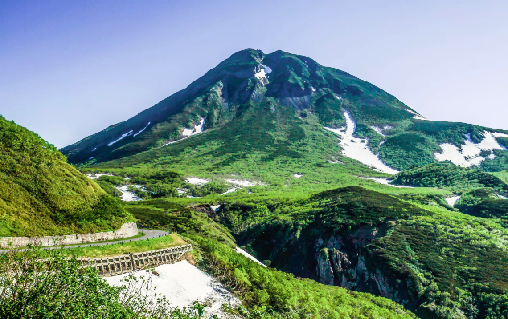
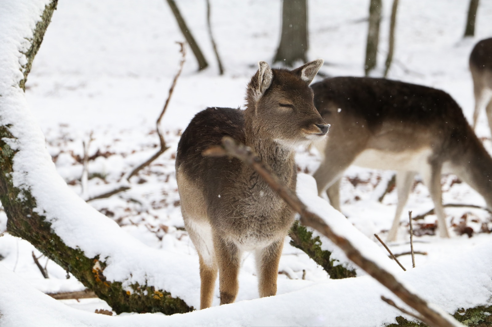
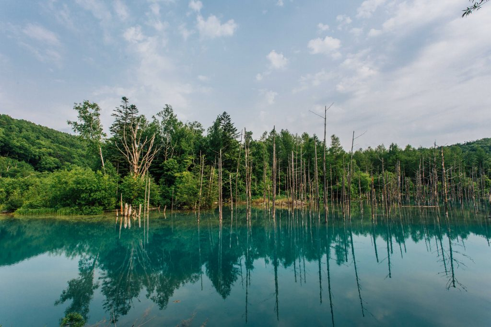
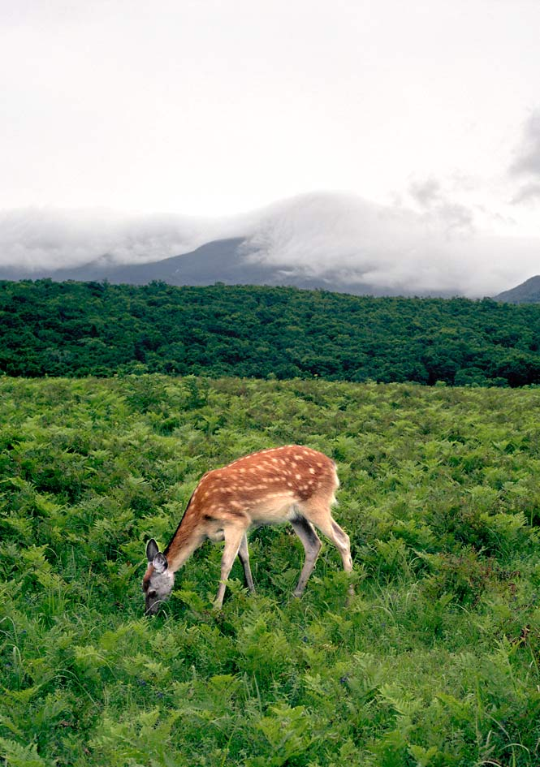

True wilderness filled with untouched lakes, sunken forests, rare birds and other beasts.
Hokkaido's Shiretoko Peninsula offers some of Japan's most pristine and unspoiled natural beauty. There is nowhere more "off-the-beaten-path" than Shiretoko. It's a great place to connect with the simple pleasures of nature.
Shiretoko National Park is a UNESCO World Heritage Site set in the magnificent mountains and steep cliffs of the northern tip of the Shiretoko Peninsula. From spring to autumn, you can admire the serene five lakes known collectively as Shiretoko Goko, follow hiking trails to hidden waterfalls or take a memorable nature cruise to see some of the many species of whales, dolphins, and seals that thrive in the nutrient-rich waters. In winter, you can witness the spectacle of drift ice by taking a cruise, going for a walk or even swimming in the icy cold waters.

In winter, you can see miles of drift ice floating south on the currents toward Nemuro and Cape Nosappu. Halfway between Notsuke and Nemuro is Lake Furenko, a mecca for birdwatchers. Roughly 300 species of wild birds are regular visitors here, so take all your camera gear to get some memorable snaps of Steller's sea eagles and Japanese red-crowned cranes.
Head inland and away from the choppy waters of the Nemuro Strait to get the best views of the glorious Shiretoko mountain range stretching out into the distance. Try Kaiyoudai Observatory in Nakashibetsu or Tawadaira Observatory in Shibecha for the best views. End your day with a hot soak and delicious dinner at secluded Yoroushi Onsen, located nearby, the perfect place to get a peek of the rare Blakiston's fish owl.
As a starter, try some uni (sea urchin) and hokke (Atka mackerel) in Utoro and Rausu; follow up with some ikura (salmon roe), shrimp and scallop in Odaito; and there's always room for some Hanasaki crab from Nemuro and its famous sanma (Pacific saury).
It's no wonder that so many bears, whales, dolphins, and birds thrive on and around the Shiretoko Peninsula. The waters are replenished annually by rich nutrients deposited by the drift ice, meaning you get to try some of the best local seafood in Japan.
Getting There
By plane
Direct flights connect Sapporo and Tokyo to Nakashibetsu Airport.
By car
Local public transit is scarce, so it's best to see the area by car. However, there is an overnight bus from Sapporo that takes you to the Shiretoko area's main bus terminals and hotels.